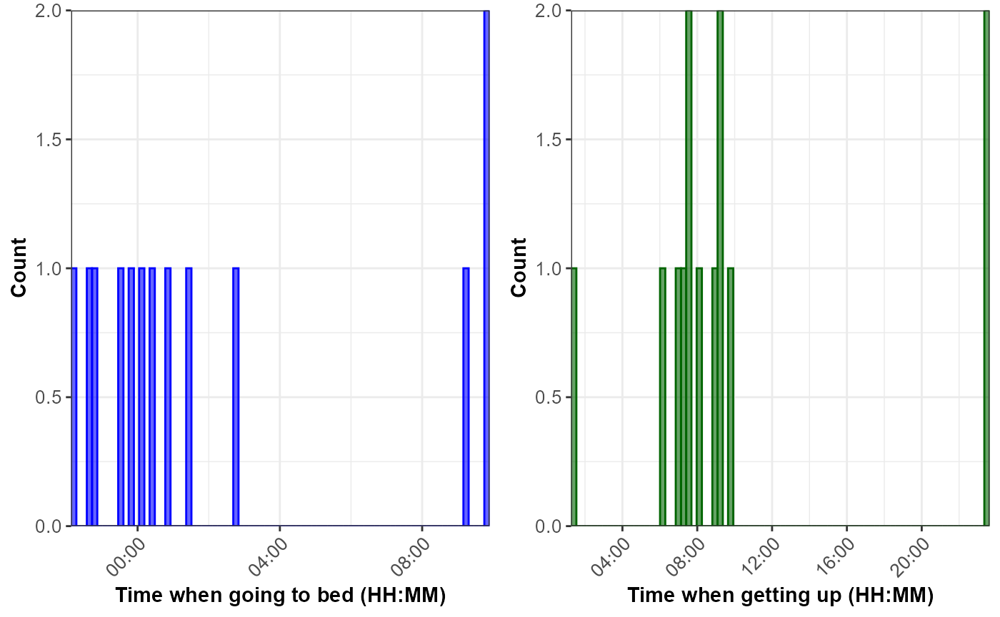

1. Introduction
The hypometrics package was built to handle physical
activity and sleep data generated by the FitBit Charge 4. Future work
will consist of augmenting the package’s adaptability in order to read
in data from different Fitbit devices or other activity and sleep
trackers (e.g. Garmin).
This article describes the sleep-specific functions that were created
as part of the hypometrics package.
Setup
To be able to use the sleep functions, firstly install and load
hypometrics.
#Install
install.packages("remotes")
remotes::install_github("leicester-cdag/hypometrics")
#Load package
library(hypometrics)Simulated data
Throughout this tutorial, the examples presented will be based on the
raw_sleep
simulated dataset.
- A preview of the
raw_sleepdataframe is shown below:
utils::head(raw_sleep)
#> id dateOfSleep logId startTime endTime duration
#> 1 P01 2026-01-01 1233452892 2025-12-31 22:48:09 2026-01-01 07:39:11 31860000
#> 2 P01 2026-01-02 5249981493 2026-01-01 22:56:55 2026-01-02 09:12:50 36900000
#> 3 P01 2026-01-03 5332094017 2026-01-03 00:58:40 2026-01-03 06:02:19 18180000
#> 4 P01 2026-01-04 5467075058 2026-01-04 02:27:50 2026-01-04 06:53:22 15900000
#> 5 P01 2026-01-05 2014372548 2026-01-05 02:47:08 2026-01-05 08:09:16 19320000
#> 6 P01 2026-01-09 1290069097 2026-01-08 23:21:35 2026-01-09 06:12:06 24600000
#> timeInBed minutesAsleep minutesAwake
#> 1 531 377 154
#> 2 615 523 92
#> 3 303 244 59
#> 4 265 188 77
#> 5 322 274 48
#> 6 410 318 922. Reading sleep data
The function sleepRead() allows the user to read and
combine raw sleep files downloaded directly from their Fitbit account.
If the downloaded folder is zipped, there is the option to unzip the
folder by setting the Unzip argument to TRUE. This will
create a new folder in the selected Folder Path called
Unzipped Fitbit. The Fitbit file type to read must be
specified using the FileType argument, either json or csv.
As the individual files do not contain personal identifiers, it might be
useful to add an ID column across the files to easily identify
participants. It is possible to do this using the StudyID
argument of the function.
An example of the syntax is shown below:
hypometrics::sleepRead(Unzip = F,
FolderPath = "C:/Users",
FileType = "json",
StudyID = "P02")3. Cleaning sleep data
The sleepCategorise() function allows the user to
separate the raw sleep data into three distinct datasets that can be
used for specific needs.
Overview of sleep periods
The sleep_overview is a dataset containing overall sleep
information including sleep start and end times as well as the number of
minutes awake, time spent in bed and duration of sleep as shown below.
Each sleep event is tagged with a specific logId (internal to Fitbit).
The logId can be used to identify specific sleep events and merge sleep
information across the three datasets. The first 8 columns of the
sleep_overview dataset are shown below.
sleepCategorise(raw_sleep) %>%
dplyr::slice(1:6)
#> id dateOfSleep logId startTime endTime duration
#> 1 P01 2026-01-01 1233452892 2025-12-31 22:48:09 2026-01-01 07:39:11 31860000
#> 2 P01 2026-01-02 5249981493 2026-01-01 22:56:55 2026-01-02 09:12:50 36900000
#> 3 P01 2026-01-03 5332094017 2026-01-03 00:58:40 2026-01-03 06:02:19 18180000
#> 4 P01 2026-01-04 5467075058 2026-01-04 02:27:50 2026-01-04 06:53:22 15900000
#> 5 P01 2026-01-05 2014372548 2026-01-05 02:47:08 2026-01-05 08:09:16 19320000
#> 6 P01 2026-01-06 NA 2026-01-05 08:09:17 2026-01-08 23:21:34 NA
#> timeInBed minutesAsleep minutesAwake
#> 1 531 377 154
#> 2 615 523 92
#> 3 303 244 59
#> 4 265 188 77
#> 5 322 274 48
#> 6 NA NA NA4. Describing sleep data
The sleepSummarise function allows the user to summarise
raw sleep data to obtain a dataset with one row per participant
including the number of nights with missing data, average time in bed,
asleep or awake.
sleepSummarise(raw_sleep)
#> # A tibble: 2 × 6
#> id n_nights_missing n_nights_with_sleep_data average_time_in_bed_hours
#> <chr> <dbl> <dbl> <dbl>
#> 1 P01 3 10 7
#> 2 P02 3 10 8
#> # ℹ 2 more variables: average_time_asleep_hours <dbl>,
#> # average_time_awake_hours <dbl>5. Visualising sleep data
The sleepVisualise function allows the user to visualise
the distribution of times when participants went to bed and got out of
bed, as shown below. The default is to plot the histogram for all times
recorded by the Fitbit for all participants. To facilitate
interpretation of the sleeping patterns, the function centres the times
when going to bed around midnight.
sleepVisualise(raw_sleep)If the user needs to visualise data for a specific participant, this
can be done by changing the argument VisualiseAll to FALSE
and indicating the participant id of interest in the
StudyID argument, as shown below:
sleepVisualise(raw_sleep, VisualiseAll = FALSE, StudyID = "P02")